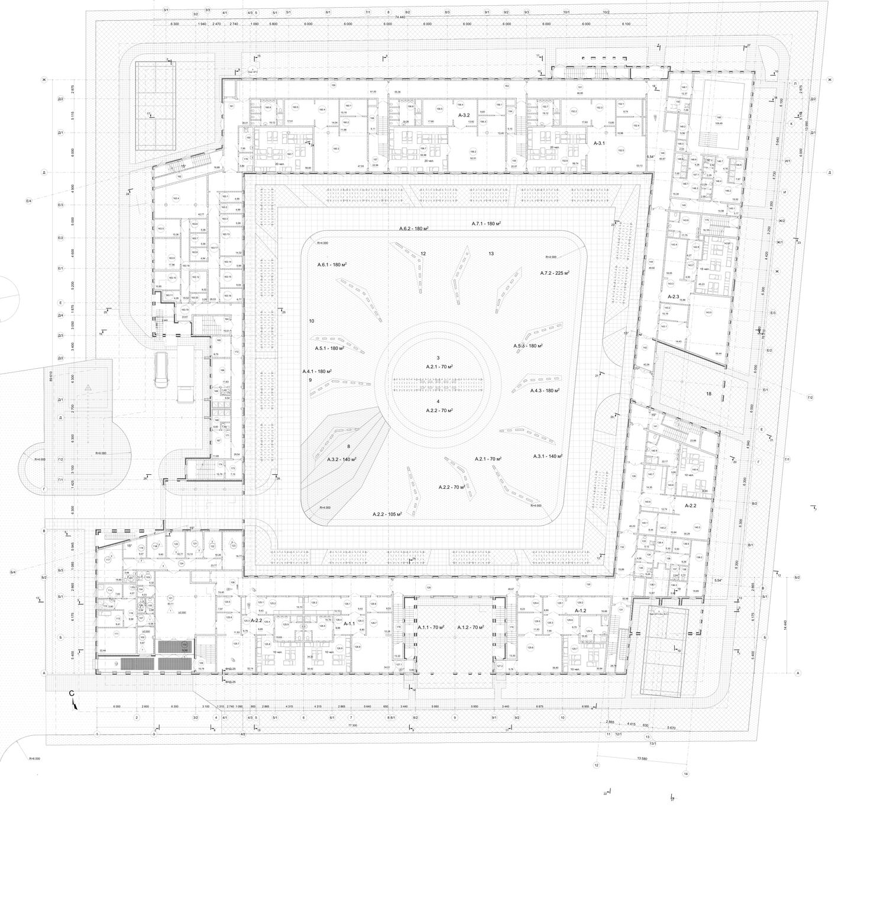
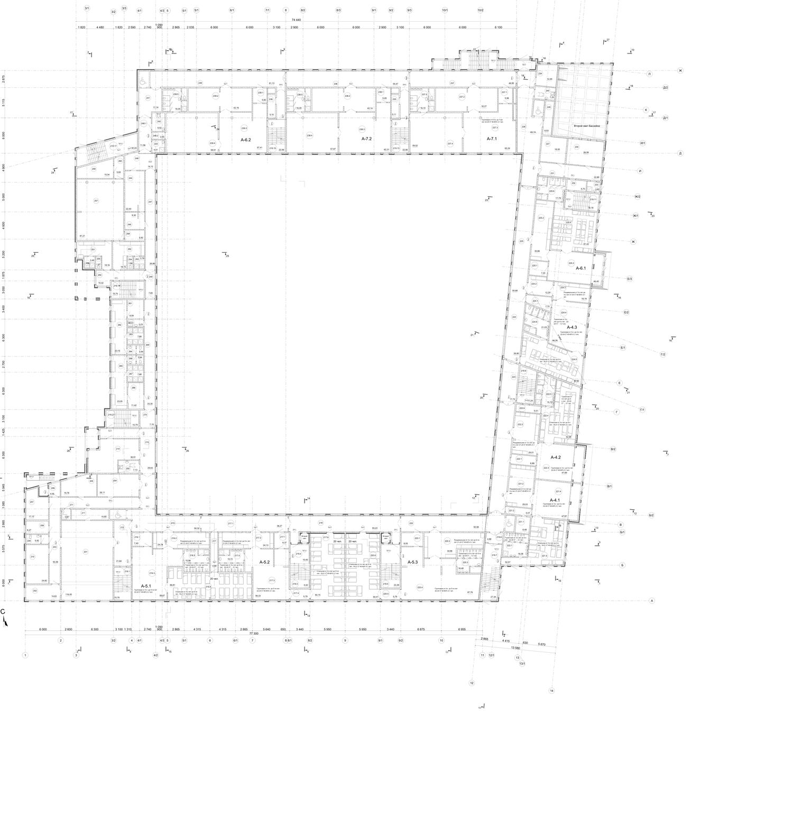
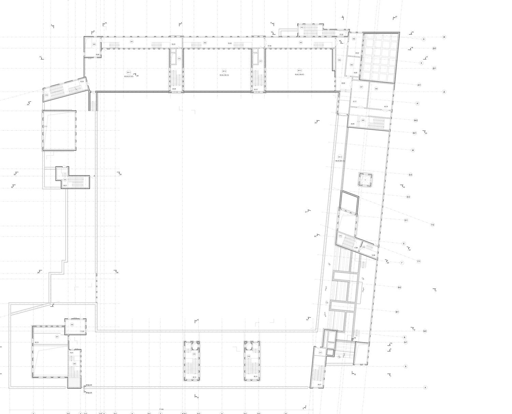
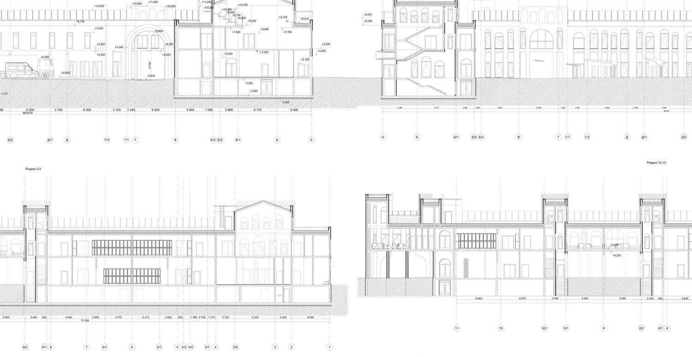
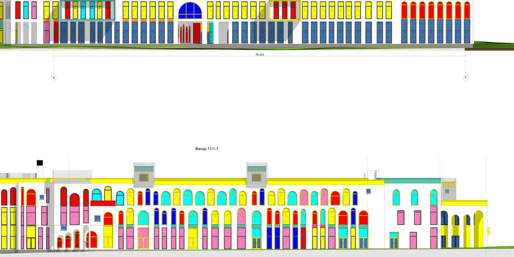

Первый разбор был по картинкам.
Чертежи его поправилиЧто подтвердилось, что оказалось неверным и почему это важно
Первый документ строился на визуализациях — а они, как выяснилось, довольно точно повторяют проект. Ошибался не образ, а цифры и акценты. Ниже — честный список.
Подтвердилось
- Каре с внутренним двором — да, 89,61 × 77,30 м, замкнутый контур.
- Аркада как основной приём — да, арочные проёмы на всех фасадах.
- Цвет как образ — да, но в проекте он жёстче и «чище», чем на рендерах.
- Два этажа — в основном да; третий этаж есть, но частично.
- Двор с площадками вокруг центра — да, 16 площадок вокруг круглой площади.
- Проблема разнобоя — да, и она даже глубже: расходятся не только картинки между собой, но и картинки с чертежами.
Оказалось неверным
- «12 групп, 220 мест» → в проекте 16 групп, расчётно 230–260 мест.
- «Пятно 2 100 м²» → пятно ≈ 3 000 м², суммарная площадь 9 852 м², а не 4 360.
- «Модуль 7,2 м, шаг 4,2 м» → сетка 6,0–6,3 м, пролёты 6 000–6 300 мм.
- «Зелёная кровля + СЭС» → в стадии П их нет вообще: кровля занята спортплощадками, террасой и техзоной.
- «Нет бассейна / обсуждается» → бассейн запроектирован, двусветный, с полным техблоком в подвале.
- «Нет парковки» → верно, и это хуже, чем казалось: мест ноль, включая drop-off.
Что фактически запроектированоТолько то, что читается в чертежах: без догадок и без визуализаций
| Параметр | Значение | Источник / комментарий |
|---|---|---|
| Наименование | «Строительство детского сада на ул. Коллективная» | штамп листа ПЗУ |
| Заказчик | МКУ «Управление капитального строительства» г. Пятигорска | штамп |
| Стадия / шифр | П · 013/2024/-АР | раздел АР, лист ПЗУ-3, 01.25 |
| Разработчик | «Проектмаркет» · разраб. Селиверстов | штамп |
| Габариты в осях | 89 610 × 77 300 мм | ПЗУ, фасад 11/1-1 |
| Сетка осей | 6 000 / 6 300 мм; крайние пролёты 2 865 · 4 315 · 5 640 · 6 955 | разрезы, планы |
| Отметки | −3,300 подвал · ±0,000 · +4,500 · +8,500 · парапет +12,000…+13,200 | разрезы 1-1…16-16 |
| Этажность | 2 этажа + частичный 3-й (спортплощадки, терраса, худкласс) | план 3 этажа |
| Площадь подвала | 2 373,01 м² · 67 помещений | экспликация |
| Площадь 1 этажа | 2 986,30 м² · 6 групп + пищеблок, медблок, администрация, бассейн | экспликация |
| Площадь 2 этажа | 3 412,80 м² · 10 групп + музкласс 116 м², физзал, кружковый зал | экспликация |
| Площадь 3 этажа | 1 079,80 м² · 3 спортплощадки 176,3 м², терраса 198,4 м², худкласс | экспликация |
| Группы | 16: А-1.1…А-7.2; 6 на 1-м этаже, 10 на 2-м | планы этажей |
| Дети в группе | 10–20 по подписям; расчётно 230–260 мест | подписи «N чел.» на планах |
| Бассейн | двусветный зал, трибуны; техблок в подвале: фильтровальная, химреагенты, ИТП | план 1 этажа, подвал |
| Кровля | спортплощадки +8,50, терраса +8,50, техзоны; зелени и СЭС нет | план 3 этажа, разрезы |
| Транспорт | въезд с запада, разворот R=8,96; машиномест и drop-off на ПЗУ нет | ПЗУ |
| Озеленение | орех 6 · яблоня 5 · шелковица 4 · малина — ≈ 15 деревьев | ведомость посадок на ПЗУ |
Площади — по итоговым строкам экспликаций соответствующих листов. Пятно застройки и площадь двора — расчётно из габаритов и толщины кольца; на листах не приведены.
Что написано в чертежах и чего в них нет
Есть
Нет — и это блокирует стадию П
Комплект — это только чертежи АР. Для вывода в экспертизу нужен полный раздел по постановлению № 87.
Что на листахКлючевые фрагменты в том виде, в котором они пришли — с отметками о том, что читается сразу





Изображения уменьшены для просмотра; исходные листы A0 в комплекте. Детали и размеры читаются в PDF.
38 уникальных заливок на листе фасадов, из них 9 — чистые RGB-цвета максимальной насыщенности. Для сравнения: в палитре RAL таких «чистых» цветов нет, ближайшие аналоги дадут другой оттенок на объекте.
Восемнадцать замечанийСгруппированы по природе проблемы; у каждого — основание и приоритет
A. Состав и исходные данные
Комплект — только чертежи. Пояснительной записки нет
AСемь листов без ПЗ, ТЭП, ведомостей и спецификаций. Стадия П по постановлению № 87 включает текстовую часть: обоснование решений, технико-экономические показатели, перечень мероприятий по охране окружающей среды, пожарной безопасности, доступности МГН.
Что делать: собрать ПЗ на 40–60 страниц и свести ТЭП в одну таблицу — без этого проект не принимают ни заказчик, ни экспертиза.
Вместимость нигде не зафиксирована
A16 групп, подписи на планах — от 10 до 20 детей. Итоговой цифры нет ни на одном листе. При этом суммарная площадь 9 852 м² даёт 41 м² на место при ориентире 12–15 м² для ДОУ. То есть либо вместимость занижена в подписях, либо площади завышены вдвое — и это прямой вопрос к смете.
Что делать: зафиксировать вместимость в задании на проектирование, свести по группам (возраст → число детей → площадь), пересчитать ТЭП.
Штампы заполнены частично
CВ основной надписи стоит «#Название Организации», поле «Согласовано» пустое, нет подписей ГИПа и главного архитектора проекта, нет отметки «В производство». Название файла не совпадает с шифром (013/2024/-АР, лист 3).
Что делать: провести нормоконтроль и перевыпустить листы с корректной основной надписью по ГОСТ Р 21.101-2020.
B. Объёмно-планировочные решения
Дети на кровле третьего этажа: спортплощадки и терраса
AНа +8,50 размещены три открытые спортплощадки старших групп (65,36 + 55,54 + 55,40 = 176,3 м²), терраса 198,39 м² и «зрительные места родителей до 15 чел.». Это не ошибка сама по себе, но требует ответов: как дети попадают на кровлю (11 лестничных клеток — какие из них ведут наверх), как эвакуируются при пожаре, кто отвечает за ограждения и ветровой режим.
Что делать: раздел «мероприятия по обеспечению пожарной безопасности» с расчётом эвакуации с отметки +8,50; ограждение 1,2 м с поручнем 0,5 м для детей; решение по ветрозащите и инсоляции; регламент доступа.
Площадки на кровле не заменяют дворовые
B176 м² на четыре–шесть старших групп — это 30–44 м² на группу против 180 м² дворовой площадки. Функция неясна: либо это дополнение к двору, либо учебные спортплощадки. В экспликации они названы «открытая спортивная площадка старших групп», но в перечне помещений 3 этажа рядом стоят «зрительные места родителей» — похоже, площадки задуманы как трибуны для мероприятий.
Что делать: определить функцию и отразить её в ПЗ; если это трибуны — переименовать и пересчитать площадь по нормам для зрительских мест.
Разброс площади групповых в три раза
BОт 70 м² (А-1.1, А-1.2, А-2.2) до 225 м² (А-7.2). При норме 2,5 м²/ребёнок групповая на 20 детей требует 50 м² — то есть запас в 3,6 раза. В сочетании с п. 02 это указывает на то, что площади нарезаны «по сетке», а не по программе.
Что делать: привести площади к программе: ясли 70–90, младшие 110–130, средние и старшие 150–180 м²; высвободившиеся метры отдать под студии и кабинеты специалистов, которых сейчас мало.
Двор: площадок на 30 % меньше нормы
B16 площадок суммарно 1 970 м². На 16 групп это 123 м² на группу при ориентире 180 м² на 20 детей. Хуже всего А-3.2 (140 м² / 20 детей = 7,0 м²) и А-2.2 (105 м²). Часть площадок по 70 м² — для ясельных групп это на границе допустимого.
Что делать: перебалансировать: забрать 10–15 % газона под расширение площадок старших групп; перенести часть малых форм на кровлю третьего этажа (там как раз 176 м²); пересчитать баланс территории.
Парковки нет вообще — ни машиноместа, ни drop-off
AНа ПЗУ есть только въезд с запада с разворотом R=8,96. При 230–260 местах это означает: родители останавливаются на ул. Коллективная, разворот техники и пожарного расчёта идёт по той же площадке, где гуляют дети. Норматив для ДОУ — 10–15 м/м на 100 мест плюс площадка для кратковременной стоянки.
Что делать: запроектировать карман drop-off на 4–5 машин у главного входа и гостевую парковку 15–20 м/м за границей участка или в его северо-западной части; проверить разворотную площадку для пожарной техники: для тупиковых проездов требуется 12 × 12 м.
Пятнадцать деревьев на 3 900 м² двора
BПо ведомости посадок: орех 6 шт (ком 0,32 м), яблоня 5 (0,12), шелковица 4 (0,22), плюс малина. Для юга и для 230–260 детей этого мало: тени в полдень почти нет, а двор окружён корпусами высотой 12 м, что усугубляет перегрев летом.
Что делать: добавить 15–20 крупномеров с комом 0,4–0,6 м по периметру площадок; орех убрать от игровых зон (аллергия, мощная корневая, падалица) — перенести в буферную зону; ввести перголы и навесы над песочницами.
Огороды по всему периметру — контекст, который не проработан
BНа ПЗУ 73 подписи «огород»: это соседние участки частного сектора, подступающие вплотную к границе. Отсюда — приватность, запахи, возможное применение пестицидов, бродячие животные, доступ через забор.
Что делать: буферная полоса 3–5 м по периметру с плотной двухрядной посадкой; ограждение 1,8 м с антивандальным низом; видеонаблюдение по периметру; в ПЗ — раздел о санитарно-защитных мероприятиях.
C. Фасад и образ
Девять чистых RGB-цветов — это не палитра, а набор заливок
B#FFFF00, #FF0000, #00FFFF, #0000FF, #87D220, #FF80C0, #FF9E3E, #50CBAC, #09F2A0 — 38 уникальных заливок на листе. Цвет не привязан к функции: одинаковый красный и на входе, и на откосе, и на декоративной вставке. Чистый жёлтый и красный на большой площади выгорают за 3–5 лет, а на объекте дадут другой оттенок, потому что в RAL таких цветов нет.
Что делать: палитра из 6 цветов с пониженной насыщенностью (RAL 1023, 3020, 6024, 5018, 5015, 9001), правило 80/15/5, не более трёх цветов на фасад, привязка цвета к возрасту группы. Образец — в разделе 04.
Один и тот же арочный проём — для окна, двери и витража
BАрка применена одинаково на всех уровнях и во всех функциях. Вход в группу не отличается от окна группы; витраж зала — тоже арка. Из-за этого первый этаж читается как торговая галерея, а не как 16 входов в детские группы.
Что делать: три типа проёма в одной сетке 6,3 м: окно (2,1 м), вход (1,8 м с навесом и пандусом), общий блок (3,0 м витраж).
Главный вход не читается
BВход с запада (оси В–Б/2) на плане есть, на фасаде не выделен. Нет козырька, тамбура большего размера, вывески, места ожидания родителей. Для родителя это главная точка навигации.
Что делать: вынести объём входа на 2,5–3 м, козырёк, витраж, место ожидания 8–10 м², тактильная плитка и мнемосхема.
На фасадах нет инженерии и безопасности
CНе показаны ограждения кровли, вентвыбросы, наружные блоки кондиционирования, молниезащита, водоотвод, тактильные указатели, камеры. На объекте они появятся сами — и разрушат задуманную графику.
Что делать: добавить в фасады и в ПЗ перечень инженерных элементов с местом размещения; вентвыбросы вывести за парапет; кондиционирование — только в нишах экранов.
D. Дисциплина чертежа
Дублирующиеся номера помещений в экспликациях
AНа 1 этаже номер 150 встречается дважды (7,09 и 7,95 м²), номер 149.1 внесён в список без наименования. На 2 этаже: 221.2 — 29,03 и 5,01 м²; 222.1 — 16,08 и 6,68 м²; 250 — 7,13 и 15,32 м². Такие вещи экспертиза находит в первую очередь, и они дешевле всего в исправлении.
Что делать: сквозная нумерация с проверкой уникальности; автоматическая сверка «номер ↔ площадь ↔ наименование» перед выпуском.
Опечатки в наименованиях помещений
C«Зал басейна», «Груповая», «Художественый класс», «Раздевлка персонала (бассейн М)», «Костелянша». Кроме того, в подвале 13 помещений названы просто «Помещение ВК» без расшифровки.
Что делать: корректура экспликаций; «Помещение ВК» расшифровать (водопровод и канализация) и объединить в один пункт, если это одна камера.
Открытые площадки включены в площадь 3-го этажа
BВ экспликации 3 этажа 374,69 м² — это открытые спортплощадки и терраса, а итог 1 079,80 м². По методике открытые эксплуатируемые кровли учитываются отдельно, иначе площадь этажа завышена на треть, а вместе с ней — объём и стоимость.
Что делать: разделить «площадь этажа в пределах внутренних поверхностей» и «площадь эксплуатируемой кровли»; пересчитать ТЭП и объёмы.
Второй этаж больше первого на 426 м²
B2 986,30 против 3 412,80 м². Консоли и козырьки такую разницу не объясняют. Скорее всего, в площадь 2-го этажа попали лоджии, терраса или площадки — но на листе это не показано.
Что делать: дать построчное сопоставление площадей по этажам и объяснить разницу в ПЗ; при необходимости пересчитать.
Приведено к одной схемеПять схем, собранных по обмерам из стадии П — не гипотеза, а чтение чертежей
Эти схемы можно показывать вместо восьми разных визуализаций: они совпадают с проектом по габаритам, сетке, отметкам и составу помещений.
4.1 Генплан по обмерам
Схема в масштабе: 5 px на метр. Габариты и посадки — по ПЗУ; площадь двора — расчётно из габаритов и толщины кольца.
4.2 Двор: 16 площадок вокруг центра
Площади площадок — из подписей на плане 1 этажа. Цветовой код возраста уже существует в проекте — его нужно только перенести с фасада на двор и навигацию.
4.3 Фасадный модуль
4.4 Разрез: что есть на самом деле
Схема повторяет разрез по данным листов «Разрезы»: два этажа по 4,5 м, частичный третий, бассейн в два света со световым фонарём, подвал с техблоком.
4.5 Кровля
Что делать, по порядкуДесять действий: от «исправить за неделю» до «решить до начала следующей стадии»
1. Почистить экспликации
Убрать дубли номеров (150, 221.2, 222.1, 250), дать наименование 149.1, исправить «Зал басейна», «Груповая», «Художественый», «Раздевлка». Это самое дешёвое исправление в проекте и самое заметное для эксперта.
2. Свести ТЭП и баланс территории
Одна таблица: площадь застройки, площадь двора, площадки по группам, озеленение, машиноместа, вместимость. Без неё невозможно ответить ни на одно замечание выше.
3. Зафиксировать вместимость
16 групп, 10–20 детей, 41 м²/место. Принять одно число и подогнать под него площади: либо уплотнить группы до 20–24 детей, либо сократить площадь на 15–20 %. Это решение на миллионы, и оно до сих пор не принято.
4. Решить судьбу третьего этажа
Три варианта: (а) оставить как есть с полным расчётом эвакуации и ограждений; (б) сделать площадки закрытыми и убрать детей с кровли; (в) отказаться от третьего этажа в пользу зелёной кровли. Рекомендую (б) — дешевле в эксплуатации.
5. Найти парковку и drop-off
Карман на 4–5 машин у входа, гостевая парковка 15–20 м/м, разворотная площадка 12 × 12 м для пожарной техники вместо радиуса 8,96 м. Без этого проект не пройдёт по транспорту.
6. Перебалансировать двор
Расширить площадки старших групп до 180 м², добавить 15–20 крупномеров, убрать орех от игровых зон, ввести перголы. Освободить место за счёт сокращения мощения на 10 %.
7. Переписать палитру
Шесть цветов RAL вместо девяти чистых RGB, правило 80/15/5, цвет = возраст. Это не «переделка проекта» — это замена ведомости отделки фасадов, то есть 2–3 листа.
8. Ввести три типа проёма
Окно 2,1 м · вход 1,8 м с навесом и пандусом · общий блок 3,0 м витраж. Это превращает «аркаду» в понятную систему и решает замечание про неразличимость входов.
9. Добавить энергоэффективность — или убрать её с картинок
В проекте нет ни зелёной кровли, ни СЭС, ни рекуперации на фасадах. Либо считать нагрузки (седаум 60–80 кг/м², панели 15–20 кг/м², доступ для обслуживания), либо честно убрать эти элементы с визуализаций. Сейчас картинки обещают то, чего нет в чертежах.
10. Пересобрать визуализации по пяти схемам
Один генплан, один разрез, один двор, один модуль, одна кровля. Шесть канонических кадров вместо восьми случайных. Тогда картинки перестанут спорить с проектом.
Четыре решения от заказчикаБез них следующий шаг невозможен
| № | Решение | Варианты | Почему сейчас |
|---|---|---|---|
| 1 | Вместимость | 240 мест (16 групп по 15) / 300 мест (по 19) / 320 (по 20) | Определяет площади, смету и весь баланс территории |
| 2 | Третий этаж | оставить открытым / закрыть / отказаться | Влияет на эвакуацию, стоимость и образ кровли |
| 3 | Парковка | на участке / только drop-off / за счёт соседнего участка | Без неё проект не согласуют по транспорту |
| 4 | Зелёная кровля и СЭС | делать в стадии Р / убрать с визуализаций | Сейчас картинки обещают то, чего нет в проекте |